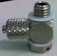

Service History
Subject: Xilinx NS7kW-06 index arm 2 site B device pick up error
Handler Model: NS-7080W
Controller: RC520
Date: 13 Oct 2009
Symptom
NS7kW-06 index arm 2 site B device pick up error.
Action
Index Vacuum unit checked ok, no leakage.
Swap another arm 2 SLK, ok
Service problem SLK, replaced silicon tubing and metal fitting, dummy run hot mode no problem.
Cause
0202-NS7K also encountered same problem due to wrong washer used on the joint fitting.
Remarks
Recently there are a few cases of device pickup errors happened at index arm.
Root-cause of the problem lies with the SLK joint fittings provided by K.A found out to be non-compliance.

As you can see, the white color washer is made of teflon which is very soft and unable to securely tighten to SLK and most of their SLK already fitted with these type of washers.
Peek material washer should be used.